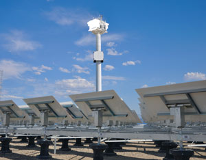

The first commercial solar power tower in the United States was unveiled near Lancaster, Calif., on Aug. 5 by eSolar.
Located about 50 miles north of Los Angeles in California’s Antelope Valley, the Sierra SunTower solar power plant uses advanced computer software to precisely align thousands of flat mirrors, or “heliostats,” to concentrate the sun’s heat on a receiver mounted at the top of a tower. Water pumped through the tower is boiled to steam, and the steam drives a turbine to produce up to 5 megawatts (MW) of electricity.
The eSolar design employs modules that cover 10 acres of land with 12,000 mirrors surrounding a single power tower to generate up to 2.5 MW of power. The Sierra SunTower achieves its 5-MW output by combining two of eSolar’s modules. Power generated at the new facility is being sold to Southern California Edison (SCE).
The eSolar approach involves several innovations, including the use of small, mass-produced mirrors for the heliostats. The company also chose to build the facility on private land designated for heavy industrial use, which was an approach that simplified the permitting of the facility.
The company plans to duplicate this model at other new solar plants throughout the United States and the world, and it already has an agreement with NRG Energy Inc. to develop three plants in California and New Mexico that will generate up to 465 MW of power. The two companies announced the overall agreement in February, then followed up in June with specific plans for a 92-MW plant in southern New Mexico and for another 92-MW plant in Lancaster, Calif., near the current eSolar power plant. The India-based ACME Group has also licensed eSolar’s technology.
At least one other company is also planning to develop solar power tower plants on private land, as BrightSource Energy Inc. announced in March that it has signed a contract with a private land developer in Nevada. BrightSource Energy plans to develop a 600-MW solar power tower project on a 6-square-mile area of private land located near transmission lines northeast of Las Vegas.
Meanwhile, two companies plan to employ parabolic trough-shaped mirrors to concentrate the sun’s heat and produce power for Arizona Public Service (APS) and SCE. Starwood Energy Group Global, LLC plans to build a 290-MW parabolic trough plant about 75 miles west of Phoenix for APS, while Solar Millennium plans to build two 242-MW facilities in California for SCE. The Solar Millenium facilities will be located in Blythe, about 200 miles east of Los Angeles, and Ridgecrest, about 120 miles north of Los Angeles, and are slated for completion in 2013 and 2014, respectively.
Another solar company, Abengoa Solar, plans to build solar trough facilities for industrial applications in Arizona and New York. The Arizona facility will treat contaminated water at a DOE site in Tuba City, while the New York facility will deliver heating, cooling, and humidity control for a Steinway & Sons piano factory in Long Island City. The New York facility will be the first in the United States to combine parabolic troughs with a two-stage absorption chiller, which is a heat-driven air conditioning system.
|
 ESOLAR The Sierra SunTower solar power plant in Lancaster, Calif., can power more than 4,000 homes in California’s Antelope Valley. |
|
|